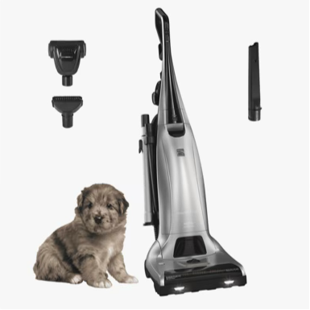

An allergist's answer
Is there such a thing as a hypoallergenic dog?
No. Not one breed. The research is consistent on this, and it surprises almost everyone who has paid extra for a "hypoallergenic" puppy.
The good news is that a dog allergy is not a yes or no question. How much allergen you breathe depends far more on your home than on the breed. Here is what the studies show, and the short list of things that actually lower your exposure.
Before you choose a dog
Test the dog, not the breed
Allergen levels vary more from one dog to the next than from one breed to the next. So the useful question is not which breed, but how you react to this particular dog. Spend real time with the dog you are considering, indoors, before you commit. If you have asthma or strong reactions, see an allergist first. Testing can also show whether you react to Can f 5, a protein made by intact male dogs. People allergic only to Can f 5 may do better with a female or neutered male dog.
Step one
Protect the room where you breathe longest
You spend seven or eight hours a night in your bedroom. Keeping the dog out of it is one of the most effective changes you can make. If the dog sleeps nearby instead, give them their own bed with a cover that goes in the washer, and seal your pillows so dander that does get in stays out of your face.
 Shop now
Shop nowCasper
The Dog Bed
From $249
A bed of their own, outside your room. The cover zips off and goes in the wash, so dander does not build up in it.
Shop the bed Shop now
Shop nowHygea Natural
Allergen Pillow Protectors, 2-Pack
Zippered covers that seal the pillow your face rests on all night. They block dust mites too.
Shop the protectors Shop now
Shop nowEarthbath
Fragrance-Free Grooming Wipes
$17.99
A quick wipe-down before the dog comes in from outside or curls up on the couch. Fragrance free, so you are not adding a new irritant.
Shop the wipesStep two
Wash the dog, twice a week
Bathing a dog lowers its allergen, but only for a short time. The AAAAI notes that Can f 1 returns to baseline within two to three days. That is why the advice is at least twice a week, not once a month. Brushing pulls out loose undercoat and the dander caught in it, so do it outdoors, and ideally have someone without allergies do it.
 Shop now
Shop nowEarthbath
Fragrance-Free Dog & Cat Shampoo
$18.99
Gentle enough for twice-weekly baths, and fragrance free. The label says hypoallergenic, but fragrance free is the part that matters.
Shop the shampoo Shop now
Shop nowFURminator
Undercoat deShedding Tool
$44.99
Removes loose undercoat before it ends up on your floors and furniture. Use it outside, between baths.
Shop the toolStep three
Dog allergen stays in the air
Unlike dust mite allergen, which settles in minutes, dog allergen particles are small and light enough to stay airborne. That makes a true HEPA air purifier worth having, especially in the bedroom. Look for the Asthma & Allergy Friendly® certification, which tests whether a purifier actually removes pet allergens.
Step four
Floors, couches and everything soft
Dog allergen sticks to carpet, upholstery, clothing and walls, then gets stirred back up. A sealed HEPA vacuum keeps it from blowing back into the air. Washable throws on the couch give the dog a spot that you can launder hot every week.

Shop nowKenmore
Elite Pet Friendly Upright
Certified for pet dander control, with a sealed HEPA system and a tool made for pulling hair out of upholstery and stairs.
Shop the vacuum Shop now
Shop nowChomChom
Pet Hair Remover Roller
$24.99
Reusable, no sticky sheets. A few passes over the couch or your coat before you leave the house.
Shop the rollerBoll & Branch
Throw Blanket
The dog's spot on the couch. Choose the organic cotton version, which handles a hot wash. Some wool styles do not.
Shop the throwQuestions
Frequently asked
The questions people search most about hypoallergenic dogs.
Are there any 100% hypoallergenic dogs?
No. Every dog makes the proteins that cause dog allergy. Breeds that shed less still produce them in dander, saliva and urine.
Do hypoallergenic dogs still cause allergies?
Yes. In a 2012 study, dogs from breeds marketed as hypoallergenic had higher allergen levels in their coats than other dogs, and their homes had no less allergen in the air.
Can you become allergic to a hypoallergenic dog?
Yes. A hypoallergenic label does not change what the dog produces, so anyone with a dog allergy can react to one.
Which dog is best for someone with allergies?
The one you have spent time with and do not react to. Allergen levels vary more between individual dogs than between breeds. An allergist can test you, including for Can f 5, a protein made by intact male dogs.
How do I live with a dog if I am allergic?
Keep the dog out of your bedroom, bathe the dog at least twice a week, run a certified HEPA air purifier, vacuum with a sealed HEPA vacuum, and wash bedding and throws hot. Medication and allergy shots can help too. Talk with your allergist.
Sources
- Vredegoor DW, et al. "Can f 1 levels in hair and homes of different dog breeds: lack of evidence to describe any dog breed as hypoallergenic." Journal of Allergy and Clinical Immunology, 2012.
- Nicholas CE, et al. "Dog allergen levels in homes with hypoallergenic compared with nonhypoallergenic dogs." American Journal of Rhinology and Allergy, 2011. Summary from Henry Ford Health.
- American Academy of Allergy, Asthma & Immunology. Hypoallergenic Dogs and Dog Allergies.
Some links on this page are affiliate links. If you buy through one, I may earn a small commission at no extra cost to you. Nothing here is sponsored and no brand paid to be included. Prices were current when this page was written and may change. This page is general information, not medical advice. If you have asthma or trouble breathing around animals, see your doctor.